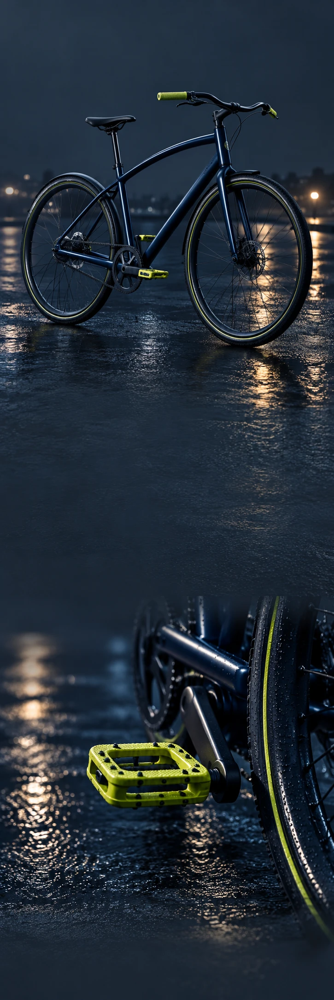

OM
FIET
SEN.
De beste weg naar huis
is soms een andere.

Heldere lijnen.Ruimte voor de stad.
DE VORMAlles wat je
Alles wat je
nodig hebt.
Een fietsconcept met een rustig silhouet en een frisse kleur. Voor de snelle boodschap én de lange weg naar huis.
Vind jouw omwegStap op.
Kijk waar je uitkomt.
Kijk waar je uitkomt.